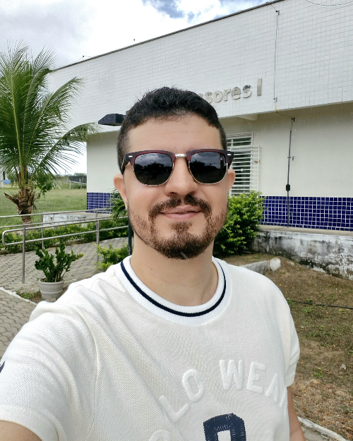

Doutorado
Adiel da Silva Lemos
Ativo Permanente
Formação e atuação
Graduação e mestrado em Física (UFCG), doutorado em Física (UFPB) e pós-doutorado (UFCG). Pesquisa em gravitação e cosmologia.
- adiel@ufersa.edu.br
- Telefone / ramal
- 2027
- Sala
- 28